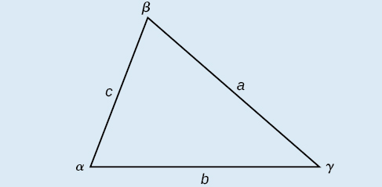

Trigonometry

For triangles labeled as the triangle to the right, with angles \(\alpha\), \(\beta\), and \(\gamma\), and opposite corresponding sides \(a\), \(b\), and \(c\), respectively, the Law of Cosines is given as three equations.
\[a^{2} = b^{2} + c^{2} - 2bc \cdot \cos\alpha\]
\[b^{2} = a^{2} + c^{2} - 2ac \cdot \cos\beta\]
\[c^{2} = a^{2} + b^{2} - 2ab \cdot \cos\gamma\]
For the following exercises, assume the angles and sides are as in the triangle above. Solve each triangle. Round to the nearest tenth.
\(\beta = 30^{\circ}\), \(a = 10\), \(c = 12\)
\(\gamma = {41.2}^{\circ}\), \(b = 6\), \(c = 7\)
\(a = 20\), \(b = 25\), \(c = 18\)
\(a = 108\), \(b = 132\), \(c = 160\)
For the following exercises, assume the angles and sides are as in the triangle above. Solve each triangle. Round to the nearest tenth.
\(\alpha = 30^{\circ}\), \(b = 12\), \(c = 24\)
\(\beta = {58.7}^{\circ}\), \(a = 10.6\), \(c = 15.7\)
\(a = 5\), \(b = 7\), \(c = 10\)
\(a = 13\), \(b = 22\), \(c = 28\)